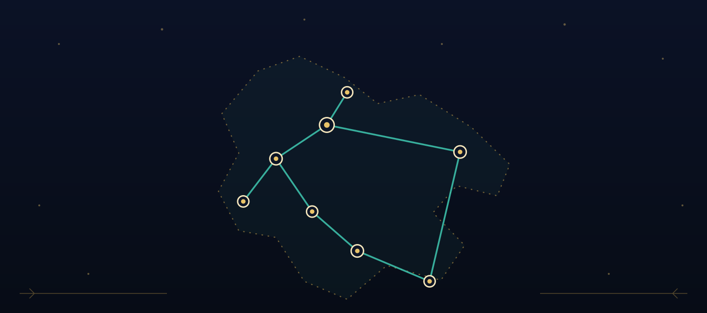

PressZa medije
The short version, for deadlines. Kratka verzija, za rokove.
Everything a journalist needs in five minutes: what the campaign is, what the story does, the three demands, and the visuals — free to use with attribution. Sve što novinaru treba u pet minuta: što je kampanja, što priča radi, tri zahtjeva i vizuali – slobodni za korištenje uz navođenje izvora.
In one paragraphU jednom odlomku
Map Without Stigma (Karta bez stigme) is a bilingual independent campaign prototype arguing for clearer Croatian routes to HIV/STI testing, PrEP, PEP and counseling without stigma, including CheckPoint-style community access beyond one city. Its centerpiece is Three Nights, a free episodic browser story in a night Art Deco style: players guide Ema through a broken-condom night and the 72-hour PEP window, Ivan through asking about PrEP, and Petra and Sara through getting tested when the nearest fitting door is three hours away. Each finished night unlocks one campaign demand. The static site has no forms or analytics and does not ask for personal health information. Karta bez stigme (Map Without Stigma) dvojezični je neovisni prototip kampanje koji zagovara jasnije hrvatske rute do testiranja na HIV i spolno prenosive infekcije, PrEP-a, PEP-a i savjetovanja bez stigme, uključujući CheckPoint-style pristup u zajednici izvan jednog grada. Središnji dio je Tri noći, besplatna epizodna priča u pregledniku u stilu noćnog ar dekoa: igrači vode Emu kroz noć puknutog kondoma i PEP rok od 72 sata, Ivana kroz postavljanje pitanja o PrEP-u te Petru i Saru kroz testiranje kad su najbliža odgovarajuća vrata udaljena tri sata vožnje. Svaka završena noć otključava jedan zahtjev kampanje. Statička stranica nema obrasce ni analitiku i ne traži osobne zdravstvene podatke.
Use with status noteKoristiti uz napomenu o statusu
This is a prototype awaiting medical review, public organizer/contact details and confirmation of any official partnership or naming permissions. It should not be described as an official HUHIV, CheckPoint, HZJZ or clinic project unless that is later confirmed. Ovo je prototip koji čeka medicinski pregled, javne podatke o organizatoru/kontaktu i potvrdu eventualnog službenog partnerstva ili dopuštenja za naziv. Ne treba ga opisivati kao službeni projekt HUHIV-a, CheckPointa, HZJZ-a ili klinike osim ako se to kasnije potvrdi.
FactČinjenica
EnglishEngleski
CroatianHrvatski
NameNaziv
Map Without Stigma
Karta bez stigme
Story titleNaslov priče
Three Nights
Tri noći
FormatFormat
Free browser story, three episodes, ~20 minutes total, no download, no forms and no analytics.Besplatna priča u pregledniku, tri epizode, ukupno oko 20 minuta, bez preuzimanja, obrazaca i analitike.
Playable in both languages, switchable mid-story.Igriva na oba jezika, s promjenom jezika i usred priče.
StatusStatus
Educational prototype awaiting medical review, responsible organizer and public contact.Edukativni prototip koji čeka medicinsku provjeru, odgovornog organizatora i javni kontakt.
Not medical advice; no active petition link yet.Nije medicinski savjet; još nema aktivne poveznice za peticiju.
The three demandsTri zahtjeva
- A clear urgent PEP assessment route in every Croatian region.Jasna urgentna ruta za procjenu PEP-a u svakoj hrvatskoj regiji.
- Clearer, more equitable and less stigmatized PrEP access and counseling.Jasniji, ravnopravniji i manje stigmatiziran PrEP pristup i savjetovanje.
- CheckPoint-style community access within real reach — fixed points, outreach and one plain-language digital route.CheckPoint-style pristup u zajednici stvarno nadohvat – stalne točke, terenski doseg i jedna jednostavna digitalna ruta.
Visual assetsVizualni materijali
Free to use in coverage with attribution to "Map Without Stigma / Karta bez stigme". All artwork is original vector illustration in the campaign's night Art Deco style; the story contains no likenesses of real people. Slobodno za korištenje u izvještavanju uz navođenje izvora "Karta bez stigme / Map Without Stigma". Sva su umjetnička djela izvorne vektorske ilustracije u noćnom ar deko stilu kampanje; priča ne sadrži likove stvarnih osoba.
{kind=link}
{kind=link}
{kind=link}
{kind=link}
ContactKontakt
TODO before outreach: publish a responsible organizer, press contact, medical reviewer status and confirmed partner list if any. Until then, this page should be treated as prototype documentation, not a press release. TODO prije outreacha: objaviti odgovornog organizatora, kontakt za medije, status medicinskog pregleda i potvrđeni popis partnera ako ih ima. Do tada ovu stranicu treba tretirati kao dokumentaciju prototipa, a ne kao priopćenje za medije.